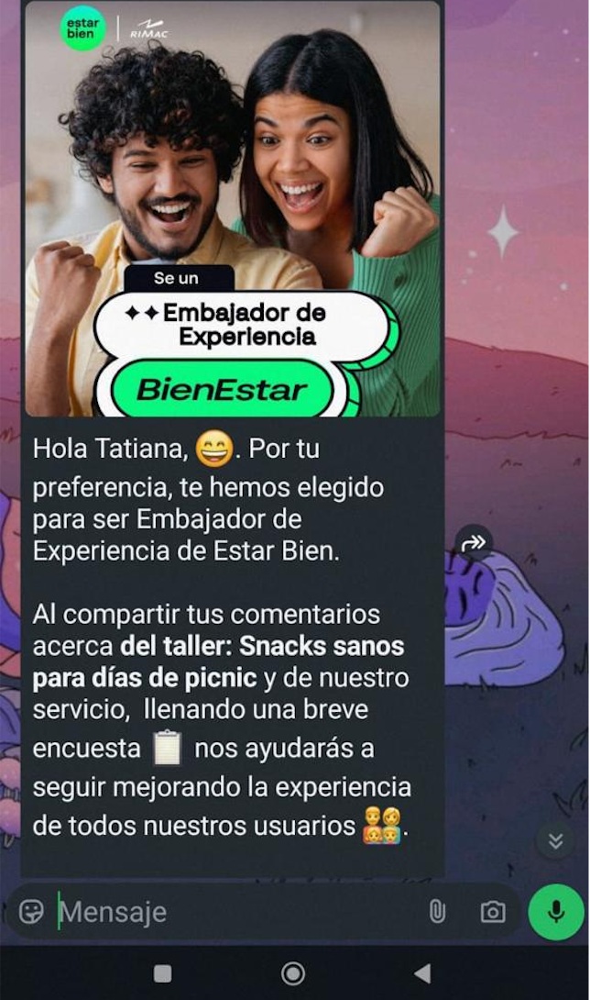
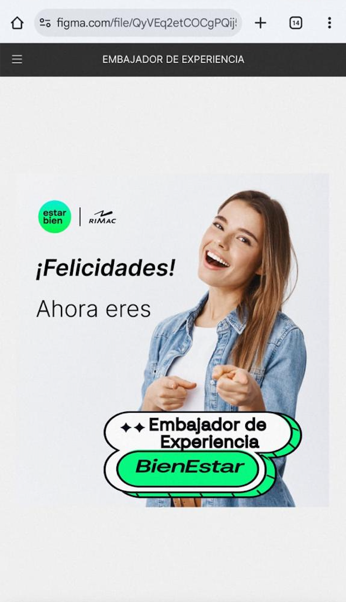

El caso reúne dos etapas de una misma transformación.
Primero ayudé a reunir la voz del usuario y hacer visibles los patrones. Después participé en convertir esos hallazgos en un sistema de gestión más claro.
Etapa 1
Escucha y calidad
Programas de escucha, QA funcional, consolidación de feedback y seguimiento de mejoras.
Etapa 2
Incidencias y SLAs
Tipificación, criticidad, flujo TO-BE, responsables, protocolos y tiempos de atención.
El feedback estaba disperso en al menos cuatro fuentes.
Estar Bien ofrecía sesiones con especialistas por web y app. Encuestas, WhatsApp, controles de calidad y validaciones de plataforma mostraban fragmentos distintos de la experiencia.
Sin una vista consolidada era difícil ver patrones, ubicar el momento del journey afectado o saber qué área debía atender cada hallazgo.
A1
Programas de escucha
Apoyé Usuario Misterioso y Embajadores de Calidad; diseñé encuestas en Typeform y coordiné convocatorias por WhatsApp.
A2
Consolidación
Unifiqué señales con categorías de journey, recurrencia, impacto y área responsable.
A3
Clustering
Agrupé hallazgos en Miro para reconocer puntos de dolor y oportunidades.
A4
QA funcional
Validé navegación, usabilidad, textos y funcionamiento en web y app, con seguimiento posterior.
Unos 100 casos al mes, pero sin un idioma compartido.
Fallas tecnológicas, errores de uso, consultas y solicitudes de mejora se gestionaban con criterios poco claros.
La falta de trazabilidad y responsables definidos generaba duplicidad, reprocesos y escalaciones innecesarias. Esto era especialmente sensible en journeys como login, agendamiento y videollamadas con especialistas.
Dar nombre al problema antes de intentar resolverlo.
El objetivo fue alinear a CX, Operaciones, Producto y Tecnología para que cada caso llegara al equipo correcto con la información necesaria.
A1
Mapeo AS-IS
Levanté el flujo existente y sistematicé duplicidad, escalaciones sin contexto y ausencia de tiempos.
A2
Tipificación y criticidad
Diseñé cinco niveles según causa, impacto, alcance, journey afectado y continuidad del servicio.
A3
Flujo TO-BE
Definí y coordiné un flujo para tipificar, priorizar y asignar cada caso.
A4
Registro trazable
Estructuré el seguimiento en Sheets y Jira con responsables, evidencias, estados y fechas.
A5
Protocolos y SLAs
Documenté manuales y flujos; se definieron 1–2 horas de respuesta inicial y un día como objetivo para casos críticos.
A6
Service Blueprint
Actualicé el blueprint para visualizar responsabilidades, coordinación y mejoras del servicio.
Resolver con mayor claridad dejó espacio para aprender.
Los cambios fueron resultado del trabajo coordinado entre CX, Operaciones, Producto y Tecnología durante el periodo.
Escuchar también requiere invitar a participar.
Estas piezas pertenecen al programa Embajadores de Experiencia. Los artefactos operativos del modelo se recrean para proteger información interna.


Los protocolos pueden ser una forma de empatía: reducen la incertidumbre para el equipo y para la persona que espera una respuesta.